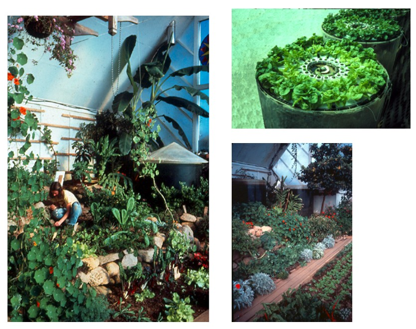

Bioshelter Research

BIOSHELTER RESEARCH BY NEW ALCHEMY INSTITUTE ( 1971-1991 )
“Let us imagine an enclosure of virtually any scale that lets sunlight into itself and that prevents heat from escaping when the interior microclimate is too cool. It also reflects sunlight, and it dumps heat out into the night sky when its interior is too warm . Let us further conceive that, within this enclosure, sufficient heat could be stored in the ground to provide several days worth , even if the sun did not shine. We would then have a system that would maintain a very stable interior microclimate without requiring mechanical heating or cooling Let us then also imagine a building that is designed not only to provide shelter from the weather, but also to provide some food; fresh water: liquid and solid waste disposal ; space heating and cooling; power for cooking and refrigerati on; and electricity for communications, lighting and household appliances.”
Sean Wellesley-Miller and Day Chahroudi., “Bioshelter” Architecture Plus Nov/Dec 1974
From 1971 to 1991, the New Alchemy Institute conducted research and education on behalf of the planet. Among its major tasks was the creation of ecologically derived human support systems – renewable energy, agriculture, aquaculture, housing and landscapes. One of its major achievements was the testing of bioshelters – solar greenhouses which enclose ecosystems of food crops, fish ponds, soil life, and indoor wildlife
This Guidebook is a brief overview of New Alchemy’s research into bioshelters, including prototypes that were built, conceptual designs, and computer models of imaginary structures.
Earle Barnhart
Early Domes – 1971-1981
New Alchemy’s first proto-bioshelter was a small cheap plastic dome placed over a small cheap inflated wading pool. The pond was used to grow edibleTilapia fish.
Several larger domes (polyethylene on wood frame) were built over in-ground ponds lined with polyethylene. Food plants were grown in the soil around the pond and were irrigated with warm, nutrient-rich pond water. Later a stronger dome was made with a wood frame and double-glazed fiberglass, over a 3000 gallon in-ground plastic-lined pond.
Mini-Ark - 1973
This structure tested more durable materials :
- a low-slope plexiglass cover over an insulated cement fishpond
- reflective insulated north wall
The “ Six-Pack” Backyard Solar Greenhouse- 1975
- built to test materials to be used in the PEI Ark
- cylindrical outer fiberglass glazing for stiffness and diffusion
- multiple inner layers of “Heat Mirror”
- reflective insulated north roof
- cement fish pond in-ground
- large soil bed at pond level
The Cape Cod Ark 1976-1989
The Ark was an early exploration into synthesizing ideas of solar heating, winter food production, fish farming, and indoor ecological agriculture. Built as a research bioshelter in 1976, it was used to study the energy dynamics of solar structures and the biochemistry and ecology of contained ecosystems.
The research showed that a specialized solar greenhouse in the Cape Cod climate could maintain a healthy, livable interior climate and could produce fresh food, needing minimal winter fuel.
The Cape Cod Ark 1989 – 2006
The Ark has gone through several reglazings and renovations. It has been connected to an energy-efficient house on the north, and has solar panels to provide electricity and heat to the house. The Ark is 90 feet long, contains about 1800 square feet of growing space, and has enough height for small trees and overhead vines. Growing inside are a diverse community of plants and a number of large solar fish ponds that are also an important part of heating and cooling the greenhouse.
The original Ark
- designed and built by Solsearch Architects (now BGHJ Architects, PEI Canada)
- 90 feet long; insulated north roof
- double-fiberglass concave south glazing, supported by cable-trussed rafters to minimize shading
- large top vent, no low front vents
- heat management :
– 9 fish ponds, above-ground, 700 gallons ea.
– rock box thermal mass for heat storage; hot air fanned to store solar heat and distribute warm air at night
– cement foundation insulated on outside
- plants in deep soil beds on several levels
- rainwater from north roof is channeled into a cement pond inside
- diverse food crops grown year-round
- permanent populations of beneficial insects to control pests

Cape Cod Ark – 2007
- steel frame
- glazing with glass and triple-layer polycarbonate
- additions of bottom and top vents
- new solar house attached to the north with a high connecting roof
- rock box chamber used for solar hot water storage
- PV solar panels (electricity ) and solar hot water panels
Prince Edward Island Ark – 1976
- designed and built by Solsearch architects (now BGHJ PEI, Canada)
- combines greenhouse, residential house, storage/barn space, solar aquaculture ponds, and active solar hot air and hot water heating systems .
- designed for extreme cold winters and low winter sun angles
Click to enlarge
Paul Sun’s Village Dome - 1980
- concept/design by Paul Sun, Architect, Boston MA.
- presented in New Alchemy’s “ The Village as Solar Ecology – Design Conference Proceedings”
- combines village-scale dome bioshelter with earth-sheltered housing
- each house opens to both interior and exterior spaces
- design allows rainwater catchment and gravity distribution, as well as multi-unit utility services of heat/water/electricity
Arkipelago : A Bioshelter Apartment – 1980
- by Jan Atkins, presented in New Alchemy’s “ The Village as Solar Ecology-Design Conference Proceedings”
- designed for Maine climate
- each apartment has both interior and exterior views and access
Malcolm Wells’ Meandering Greenway - 1981
- designed by Malcolm Wells, based on sketch by John Todd
- this bioshelter creates a year-round greenway meandering througha landscape, adapting to slopes and contours
- lines of solar ponds inside serve as thermal mass, aquaculture, irrigation, rainwater storage, and wastewater purification, and as linear rivers to move water from place to place.
Pillow Dome - 1982
“Imagine living outdoors indoors in a transparent dome, picking organically grown vegetables right in your kitchen, sleeping in a bed under luxuriant trees or slung beneath the opened apex, comfortable regardless of the weather outside. Your autonomous garden home is heated and cooled by the sun, which also provides electricity and hot water. Solar heat is stored in translucent water tanks that nurture edible fish and furnish nutrient rich irrigation water for the plants …”
J. Baldwin. “The Garden of Eden” Buckyworks 1996.
- designed and built by J.Baldwin, at New Alchemy, Cape Cod
- 50 foot diameter, aluminum tube frame, lightweight structure, minimum shading
- triple-wall inflated pillows made of Tefzel (a flurocarbon polymer), inflated with argon gas
- 5 triangular pillow vents at top, 5 vents at bottom

Computer Modeling of Bioshelters – 1981 , 1982
“Modeling and Design of Future Bioshelters” Joe Seale and John Wolf. Journal of the New Alchemists – 7
- computer simulations of domes and other shapes to predict light levels and temperature extremes.
-also analysed solar ponds as thermal mass and effects of infiltration rates
For all shapes except the shallowest dome, some reflective insulation up the north wall to about 15 degrees results in higher light levels on the ground, since some light that would have gone out the north wall is reflected back inside.
For all shapes, reflective insulation up the north wall to about 40 degrees results in higher interior temperatures, since some heat that would have gone out the north wall is retained inside. However, light levels are reduced
Note that a quonset shape maintains significantly higher temperatures than the other shapes.
Residential Quonset Bioshelters - 1983
- designs proposed by Earle Barnhart as residential bioshelter concepts
- quonset shaped
- suited for rainwater catchment, water storage and gravity distribution
- internal thermal mass wall for utilitiy lines, water storage, heat management equipment
- rubber membranes control water storage and drainage
Oliva Residential Bioshelters - 1983
- designs by architect Frank Oliva to New Alchemy as residential bioshelter concepts
- half greenhouse, half residence
- rainwater collected from house roof, stored and gravity-distributed to multi-level ponds and plant beds
- multi-family version (below) with wood stove residential back-up
Composting Greenhouse -1984
- designed and built by Bruce Fulford, at New Alchemy, Cape Cod.
- used to research the concept of heating a greenhouse with the heat from compost
- inexpensive hoop house; double polyethylene, inflated glazing
-compost chambers on north side release heat and CO2 into greenhouse
Future Bioshelters
While New Alchemy’s work offers promising directions for future bioshelters, many other researchers have created bioshelter structures that contain valuable concepts :
Based on this combined experience, it is clearly possible to construct permanent bioshelters that could provide a wide range of basic human needs in an ecological manner.
So why not make them for everybody. A few million bioshelters would go a long way towards a humane transition for a petroleum-challenged society, and would cost a lot less than a good-sized war. Think of it as a sort of insurance against local economic disruptions and the vagaries of international energy supplies.
Be the change you want to see in the world.
Mahatma Gandi
REFERENCES – Publications by New Alchemy Institute
The Journal of the New Alchemists No. 2 1974 134 pp. editor Nancy Jack Todd
[selected articles]
“New Alchemy’s Ark ….” by Robert Angevine, Earle Barnhart, & John Todd
“Walton Two: A Compleat Guide to Backyard Fish Farming” by Wm. McLarney &
John Todd. pp 79-115.
[ a working manual of tilapia aquaculture reviewing previous 3 year’s research.]
The Journal of the New Alchemists No. 3 1976 130 pp editor Nancy Jack Todd [selected articles]
“An Ark for Prince Edward Island” by John Todd
The Journal of the New Alchemists No. 4 1977 150 pp. editor Nancy Jack Todd [selected articles]
“ Tomorrow is Our Permanent Address” by John Todd [ bioshelter concepts & PEI
Ark details ]
“Bioshelters as Organisms” by Ron Zweig
“Bioshelter Primer” by Earle Barnhart
“The Six-Pack : A Backyard Solar Greenhouse” by Laura Engstom
The Journal of the New Alchemists No. 5 1979 154 pp editor Nancy Jack Todd [selected articles]
“Biotechnic Strategies in Bioshelters” by Earle Barnhart
“Soundings from the Cape Cod Ark” by Kathi Ryan
“Where Does All the Heat Go?” by Joe Seale [ a computer model to calculate heat
in the PEI Ark]
The Journal of the New Alchemists No. 6 1980 186 pp. editor Nancy Jack Todd (publ Stephen Green Press)
[selected articles]
“The Energetics of Solar-Algae Pond Aquaculture by John Wolfe
“From Our Experience : The First Three Years Aboard the Cape Cod Ark”
by NAI staff and Solsearch Architects
The Journal of the New Alchemists No. 7 1981 178 pp editor Nancy Jack Todd (publ Stephen Green Press )
[selected articles]
“Logging the Course of the Ark :
“Indoor Gardening” by Colleen Armstrong
“Controlling the Whitefly” by Colleen Armstrong
“ Toxic Materials in the Bioshelter Food Chains & Surrounding Ecosystems”
by Dr. Han Tai, Colleen Armstrong, and John Todd
“Modelling and Design of Future Bioshelters” by Joe Seale & John Wolfe
“The Village as Solar Ecology” Nancy Jack Todd & John Todd
“Energy And Architecture :
“Solar village Principles & Construction Ideas” by Malcolm Wells.
“A Dome Bioshelter as a Village Component” by J. Baldwin.
MISC. REPORT : Observations of Plant Response and Food Production in Solar Bioshelters. November 1977. 14 pp.
by Kathi Ryan & Earle Barnhart [ report on maiden winter of Cape Cod Ark, built in fall 1976 ]
TECHNICAL BULLETIN # 3. Notes on Greenhouse Agricultural Management. by Colleen Armstrong. 8 pp.
TECHNICAL BULLETIN # 7. Controlling Aphids in the Greenhouse. 9 pp. Colleen Armstrong, Steven Chamay,
Richard Heiman, Canstance Wiseman
RESEARCH REPORT 1-A . Greenhouse CO2 Dynamics and Composting in a Solar Heated Bioshelter. 1979. 19 pp.
by Robert “Sardo” Sardinsky.
Published in “ Solar Greenhouses : Living & Growing” – Proceedings of 2 nd Natl
Energy-Conserving Greenhouse Conference. p 22-40. Am. Solar Energy Society.
RESEARCH REPORT 1-B Importance of Carbon Dioxide in Greenhouse Crop Production :
A Greenhouse CO2 Dynamics Primer.
Nov 1 1978. 35 pp. by Robert “Sardo” Sardinsk
“Assessment of a Semi-Closed, Renewable Resource-Based Aquaculture System
Progress Report No. 3
appendices :
IX. Agriculture & Aquaculture in Bioshelters : The New Alchemy Experience.
X. The Energetics of Solar Pond Aquaculture. by John Wolfe